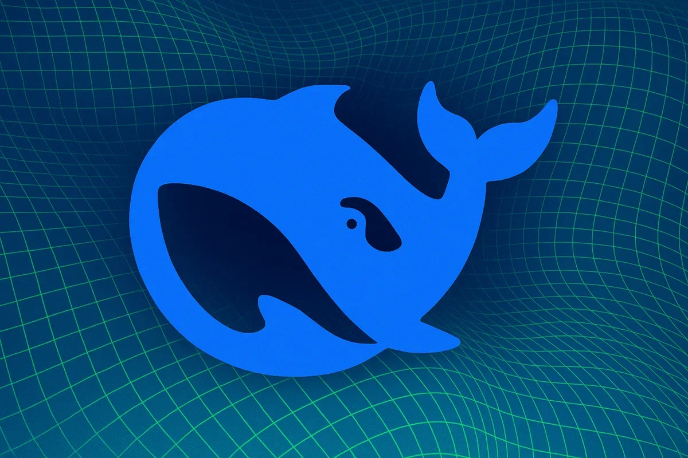

ИсследованияИндустрия
Берлин и Мюнхен разошлись в оценке ответственности Google за ИИ-ответы в поиске
Два немецких суда вынесли противоположные решения по ИИ-поиску Google — кто прав?
The Decoder
16 июн. 2026 г.Бизнес-новости об искусственном интеллекте: продукты, партнёрства, рыночные тренды и релизы компаний со всего мира.
305 материалов
Два немецких суда вынесли противоположные решения по ИИ-поиску Google — кто прав?

GPU на 60% быстрее, NPU до 160% — Qualcomm показала чип для следующего поколения умных очков.

Опрос WordPress VIP: большинство потребителей отвергают бренды, упоминающие ИИ, и требуют прозрачности.

Крупнейшее IPO в истории: SpaceX привлекла $85,7 млрд и сделала Маска триллионером

SpaceX заплатила $60 млрд за Cursor — и признала, что xAI отстаёт от OpenAI и Anthropic в ИИ-кодинге

Минюст встал на сторону xAI в споре о турбинах, сославшись на военное использование Grok.

Plaud заработала $100 млн на ИИ-диктофонах без экрана — и половина пользователей платит

Robinhood уволил 290 человек и не сослался на ИИ — пока все остальные именно так и делают

ShinyHunters слили данные Knicks и MSG — адреса, контакты и «стоимость таланта» теперь в открытом доступе

SpaceX дороже Amazon — и покупает ИИ-стартап Cursor за $60 млрд. Как это возможно?

Grok — военная необходимость? Минюст США встал на защиту незаконных турбин xAI

Стартап Probably получил $9 млн на создание «экзоскелета» для LLM, который предотвращает галлюцинации и ошибки.

Хакеры крадут целые игры на Roblox, маскируясь под работодателей

SpaceX потратит $60 млрд на ИИ-редактор кода Cursor — чтобы догнать OpenAI и Anthropic

Какие ИИ-модели повторяют российские нарративы, а какие их отвергают — первый систематический тест

SpaceX покупает Cursor за $60 млрд акциями — детали сделки с ИИ-стартапом

OpenAI потеряла $39 млрд в 2025 году — но $30 млрд из них бумажные. Что стоит за этой цифрой?

Anthropic остановила реформу биллинга в последний момент — IPO и ценовая война с OpenAI изменили расчёты

DeepSeek взял деньги впервые — $7,4 млрд без права голоса для инвесторов

Малайзийский стартап привлёк $62,5 млн на развитие ИИ-агентов для обработки сообщений клиентов

Трамп едва не заблокировал флагманские модели Anthropic — что стоит за 90-минутным ультиматумом

Студенты Стэнфорда освистали Сундара Пичаи из‑за контрактов Google с Минобороны Израиля и ICE.

Белый дом отключил модели Anthropic одним письмом — без суда и без объяснений. Что это значит для ИИ-отрасли

Meta внедрила в Facebook поиск с ИИ, который отвечает на вопросы, анализируя публичные посты пользователей.

Правительство США обязало Anthropic отключить новейшие ИИ-модели Fable 5 и Mythos 5 для иностранцев.

Meta запускает ИИ Mode в Facebook: поиск по публичным постам и новые ИИ-инструменты

SpaceX провела крупнейшее IPO в истории: $75 млрд, акции +19% в первый день и 4400 новых миллионеров

Спилберг снял фильм о том, как видео пришельцев объединяет человечество — но в эпоху ИИ в подлинность таких видео уже никто не верит.

Отключение Anthropic Fable 5 и Mythos 5 по требованию США подстегнуло гонку суверенного ИИ в Европе, Канаде и Китае.

США против Anthropic: можно ли вообще создать LLM, которую нельзя взломать?